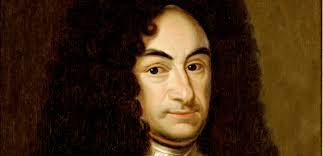

Gottfried Wilhelm Leibniz
An overview of the mathematical and scientific achievements of this remarkable Enlightenment thinker.

A portrait of Gottfried Wilhelm Liebniz, the man himself
The Polymath
Linear Systems
Leibniz pioneered many techniques that laid the foundation for modern linear algebra, including Guassian elimination and the theory of determinants.
Geometry
Leibniz used a long series of numbers to approximate the value of one-fourth pi, namely the alternate addition of one, subtraction of one third, addition of one fifth, subtraction of one seventh, and so forth. This method of approximating one-fourth pi is only really useful when a great deal of terms are added together.
For instance, 10,000,000 terms must be added before one-fourth pi is accurately approximated to eight decimal places.
He also spent time attempting to create a definition of a straight line, differing from other mathematicians in that most of them believed that the definition of a straight line was the shortest path between two points while he believed that this was only a property of straight lines, not a definition thereof.
Calculus
Leibniz, along with Isaac Newton, of discovering calculus. The pair discovered it independently of each other and used different notations to describe their discoveries; Leibnizian integral and differential notatation is still used today. He is also credited with first articulating the fundamental theorem of calculus.
The Scientist
Physics
He devised a new system of motion in conrast to that of Newton's and Descartes' systems of motion, building on the notion of conservation of kinetic and potential energies instead of conservation of momentum. Additionally, he predicted Einstein in his clash with Newton by arguing that space and time were both relative species, not absolute.
Psychology
One of Leibniz's primary interests was psychology. He wrote about attention and consciousness, memory, learning (association), motivation (the act of what he called "striving"), emergent individuality, and the general dynamics of development (evolutionary psychology). His writings would go on to inspire Wilhelm Wundt, the founder of psychology as a discipline.
Technology
Leibniz was an avid engineer, and has been claimed by some as the father of applied science (he coined the phrase theoria cum praxi, which translates into theory and practice). Leibniz built a steam engine, designed water pumps and wind-driven propellers, hydraulic presses, mining machines, lamps, submarines, and more.
He may have been the first computer theorist. He documented the binary numeral system and articulated logical properties such as conjunction, disjunction, negation, identity, inclusion, and the empty set. He would go on to invent a machine that could carry out all four arithmetic operations (although it was not a complete success because the carry operation wasn't fully automated).
Click the following link for more information on Leibniz.